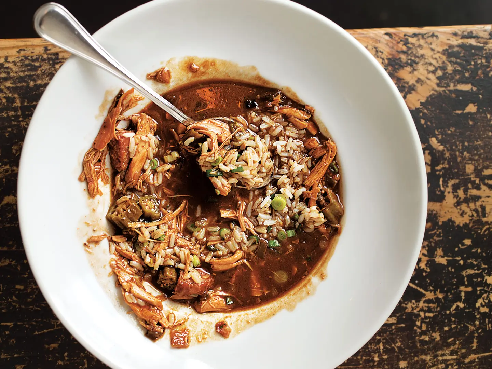

Fried Chicken Gumbo

The Best Gumbo Around
This is a favourite dish of mine and the best gumbo if you have the time to make it. This gumbo is a bit different in how the roux is made. Traditionally a roux is flour that is browned in butter or oil. In this case, we will be doing just that but with the added step of frying chicken.
Ingredients
- 1 1⁄4 cups plus 2 tbsp. canola oil
- 1 (3 1/2–4 lb.) chicken, cut into 8 pieces
- 2 1⁄2 tsp. freshly ground black pepper
- Kosher salt, to taste
- 2 cups flour
- 1 1⁄2 tsp. dark chile powder
- 1 1⁄2 tsp. filé powder
- 1 tsp. cayenne
- 1 tsp. ground white pepper
- 1 tsp. paprika
- 3 cloves garlic, minced
- 3 stalks celery, minced
- 1 green bell pepper, minced
- 1 jalapeño, minced
- 1 poblano pepper, minced
- 1 yellow onion, minced
- 12 cups chicken stock
- 1 lb. andouille, halved and sliced
- 12 oz. okra, trimmed and sliced 1/2" thick
- Sliced scallions, for garnish
- Cooked white rice, for serving
Instructions
- Heat 1 1⁄4 cups oil in an 8-qt. Dutch oven until a deep-fry thermometer reads 350°. Season chicken with 1 tsp. black pepper and salt; toss with 1⁄2 cup flour. Working in batches, fry chicken until golden; transfer to paper towels to drain.
- Add remaining flour to Dutch oven; whisk until smooth. Reduce heat to medium-low; cook, whisking, until color of roux is dark chocolate, 1–1 1⁄2 hours. Add remaining black pepper, the chile and filé powders, cayenne, white pepper, paprika, garlic, celery, bell pepper, jalapeño, poblano, and onion; cook until soft, 10–12 minutes. Add stock; boil. Reduce heat to medium-low; cook, stirring occasionally and skimming fat as needed, until slightly thickened, about 30 minutes. Add reserved chicken; cook until chicken is cooked through, about 45 minutes. Add andouille; cook until chicken is falling off the bone, about 1 hour.
- Using tongs, transfer chicken to a cutting board and let cool slightly; shred, discarding skin and bones, and return to pot. Heat remaining oil in a 12" skillet over medium-high. Cook okra until golden brown and slightly crisp, 8–10 minutes, then stir into gumbo; cook 15 minutes. Garnish with scallions; serve with rice.